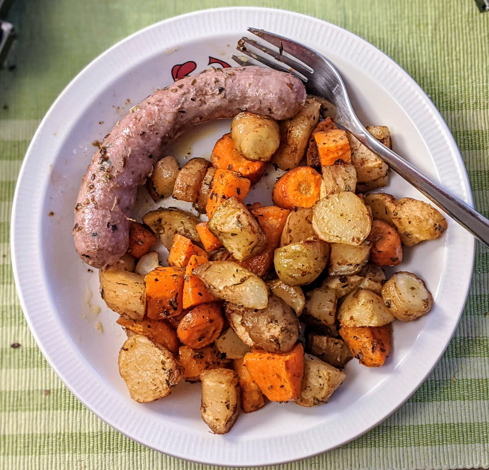
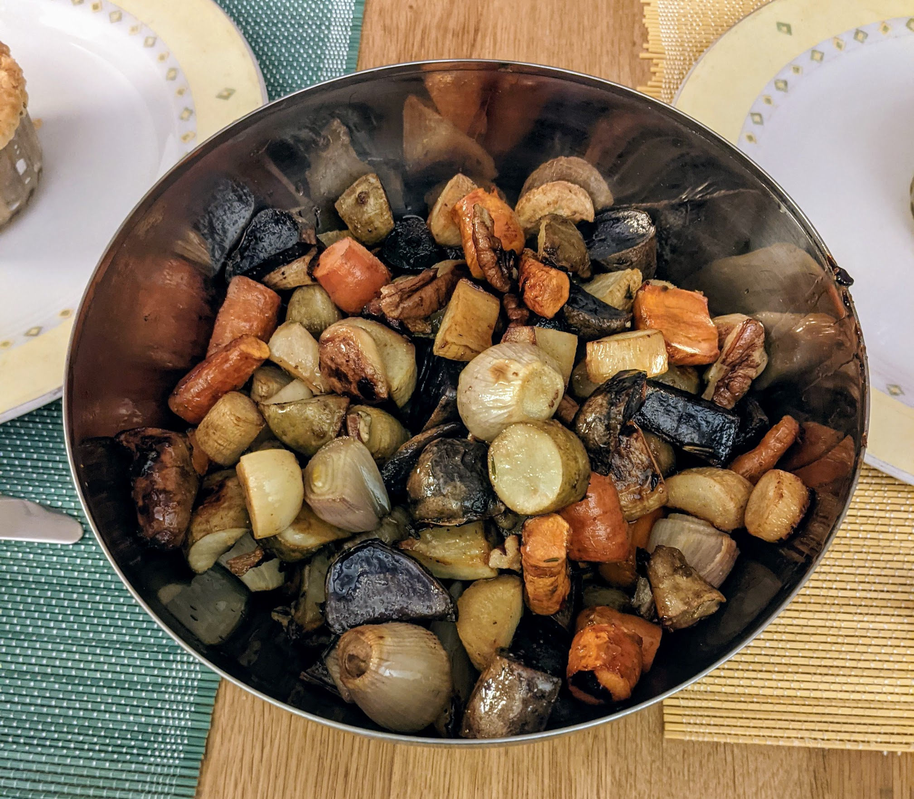

..@..♦.D.

|
Présentation 
|
Blog
|
Recettes
|

Pour 5 personnes :
Variante : pour une version de Thanksgiving, on peut faire une sauce avec une moitié de sirop d'érable et une moitié d'huile d'olive, faire mariner des noix de pécan dans la sauce quelques minutes, puis utiliser la sauce sur les légumes et réserver les noix pendant la cuisson, en ne les rajoutant que 5 minutes avant la fin.
